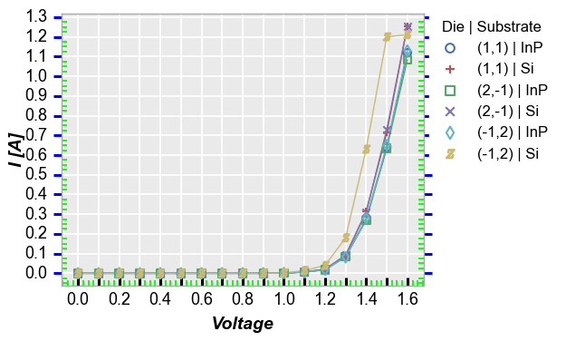

ticks¶
- fcp.ticks()¶
Dummy function to return the ticks API with help() (not used directly for plotting).
- Keyword Arguments
ticks_major (boolean) – Enable/disable major x-axis and y-axis tick marks. Defaults to True. More details
ticks_major_alpha (str) – Transparency-axis value for major tick marks between 0-1. Defaults to 1. More details
ticks_major_color (str) – Hex-axis color string for x-axis and y-axis major tick marks. Defaults to #ffffff . More details
ticks_major_direction (str) – Point tick marks ‘in’ or ‘out’ from the axes area. Defaults to ‘in’. More details
ticks_major_increment (float) – Specify the spacing of major tick marks. Defaults to None. More details
ticks_major_length (float) – Specify the length of the major tick marks in pixels. Defaults to 6.2. More details
ticks_major_width (float) – Major tickline width in pixels (float ok). Defaults to 1.3. More details
ticks_major_width – Specify the width of the major tick marks in pixels. Defaults to 2.2. More details
ticks_major_x (boolean) – Enable/disable major x-axis tick marks. Defaults to True. More details
ticks_major_x2 (boolean) – Enable/disable secondary-axis major x-axis tick marks. Defaults to True. More details
ticks_major_x2_alpha (str) – Transparency-axis value for secondary-axis major x-axis tick marks between 0-1. Defaults to 1. More details
ticks_major_x2_color (str) – Hex-axis color string for secondary-axis x-axis major tick marks. Defaults to #ffffff. More details
ticks_major_x2_width (float) – Major secondary x-axis tickline width in pixels (float ok). Defaults to 1.3. More details
ticks_major_x_alpha (str) – Transparency-axis value for major x-axis tickslines between 0-1. Defaults to 1. More details
ticks_major_x_color (str) – Hex-axis color string for x-axis major tick marks. Defaults to #ffffff . More details
ticks_major_x_width (float) – Major x-axis tickline width in pixels (float ok). Defaults to 1.3. More details
ticks_major_y (boolean) – Enable/disable major y-axis tick marks. Defaults to True. More details
ticks_major_y2 (boolean) – Enable/disable secondary-axis major y-axis tick marks. Defaults to True. More details
ticks_major_y2_alpha (str) – Transparency-axis value for secondary-axis major y-axis tick marks between 0-1. Defaults to 1. More details
ticks_major_y2_color (str) – Hex-axis color string for secondary-axis y-axis major tick marks. Defaults to #ffffff. More details
ticks_major_y2_width (float) – Major secondary y-axis tickline width in pixels (float ok). Defaults to 1.3. More details
ticks_major_y_alpha (str) – Transparency-axis value for major y-axis tick marks between 0-1. Defaults to 1. More details
ticks_major_y_color (str) – Hex-axis color string for y-axis major tick marks. Defaults to #ffffff . More details
ticks_major_y_width (float) – Major y-axis tickline width in pixels (float ok). Defaults to 1.3. More details
ticks_minor (boolean) – Enable/disable minor x-axis and y-axis tick marks. Defaults to True. More details
ticks_minor_alpha (str) – Transparency-axis value for minor tick marks between 0-1. Defaults to 1. More details
ticks_minor_color (str) – Hex-axis color string for x-axis and y-axis minor tick marks. Defaults to #ffffff . More details
ticks_minor_direction (str) – Point tick marks ‘in’ or ‘out’ from the axes area. Defaults to ‘in’. More details
ticks_minor_length (float) – Specify the length of the minor tick marks in pixels. Defaults to 0.67 * ticks_major_length. More details
ticks_minor_number (float) – Specify the number of minor tick marks. Defaults to None. More details
ticks_minor_width (float) – Specify the width of the minor tick marks in pixels. Defaults to 0.6 * ticks_major_width. More details
ticks_minor_width – minor tickline width in pixels (float ok). Defaults to 0.5. More details
ticks_minor_x (boolean) – Enable/disable minor x-axis tick marks. Defaults to True. More details
ticks_minor_x2 (boolean) – Enable/disable secondary-axis minor x-axis tick marks. Defaults to True. More details
ticks_minor_x2_alpha (str) – Transparency-axis value for secondary-axis minor x-axis tick marks between 0-1. Defaults to 1. More details
ticks_minor_x2_color (str) – Hex-axis color string for secondary-axis x-axis minor tick marks. Defaults to #ffffff. More details
ticks_minor_x2_width (float) – minor secondary x-axis tickline width in pixels (float ok). Defaults to 0.5. More details
ticks_minor_x_alpha (str) – Transparency-axis value for minor x-axis tick marks between 0-1. Defaults to 1. More details
ticks_minor_x_color (str) – Hex-axis color string for x-axis minor tick marks. Defaults to #ffffff . More details
ticks_minor_x_width (float) – minor x-axis tickline width in pixels (float ok). Defaults to 0.5. More details
ticks_minor_y (boolean) – Enable/disable minor y-axis tick marks. Defaults to True. More details
ticks_minor_y2 (boolean) – Enable/disable secondary-axis minor y-axis tick marks. Defaults to True. More details
ticks_minor_y2_alpha (str) – Transparency-axis value for secondary-axis minor y-axis tick marks between 0-1. Defaults to 1. More details
ticks_minor_y2_color (str) – Hex-axis color string for secondary-axis y-axis minor tick marks. Defaults to #ffffff. More details
ticks_minor_y2_width (float) – minor secondary y-axis tickline width in pixels (float ok). Defaults to 0.5. More details
ticks_minor_y_alpha (str) – Transparency-axis value for minor y-axis tick marks between 0-1. Defaults to 1. More details
ticks_minor_y_color (str) – Hex-axis color string for y-axis minor tick marks. Defaults to #ffffff . More details
ticks_minor_y_width (float) – minor y-axis tickline width in pixels (float ok). Defaults to 0.5. More details
Examples
Default styling:
>>> import fivecentplots as fcp >>> from pathlib import Path >>> import pandas as pd >>> df = pd.read_csv(Path(fcp.__file__).parent / 'test_data' / 'fake_data.csv') >>> fcp.plot(df, x='Voltage', y=['Voltage', 'I [A]'], legend=['Die', 'Substrate'], ax_size=[400, 300], filter='Target Wavelength==450 & Temperature [C]==25 & Boost Level==0.2')

Ugly styling:
>>> import fivecentplots as fcp >>> from pathlib import Path >>> import pandas as pd >>> df = pd.read_csv(Path(fcp.__file__).parent / 'test_data' / 'fake_data.csv') >>> fcp.plot(df, x='Voltage', y=['Voltage', 'I [A]'], legend=['Die', 'Substrate'], ax_size=[400, 300], filter='Target Wavelength==450 & Temperature [C]==25 & Boost Level==0.2', ticks_major_increment=0.1, ticks_major_x_color='#000000', ticks_major_x_length=15, ticks_major_x_width=4, ticks_major_y_color='#0000FF', ticks_major_y_direction='out', ticks_minor=True, ticks_minor_number=3, ticks_minor_color='#00FF00')
